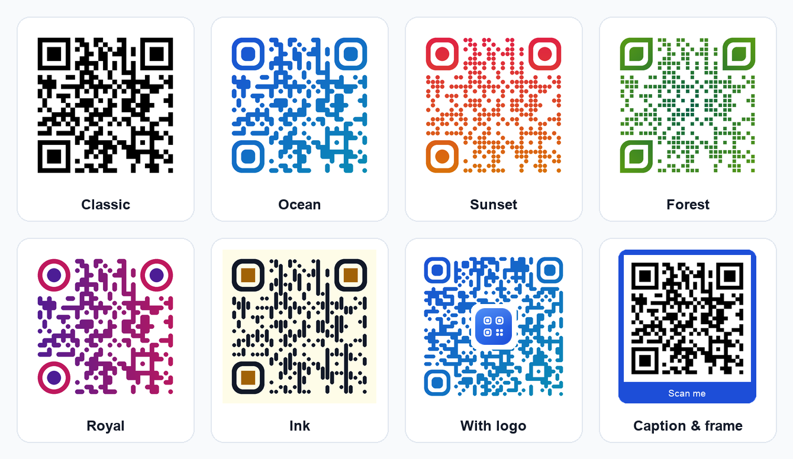

Free QR code generator for Windows and macOS
Make QR codes for links, Wi-Fi, contacts, WhatsApp, locations and events. Add your colors and logo, check that the code scans, and save it as PNG, SVG or PDF.
- Free and open source
- Works offline
- No ads, no sign-up
- Codes never expire
Every code on this page was made with QR Studio and opens the project.
Everything a QR code maker needs
One small app. Nothing to sign up for, nothing uploaded.
10 code types
Link, text, Wi-Fi, vCard contact, email, SMS, phone call, WhatsApp, location and calendar event.
Your design
6 ready styles, gradients, 7 dot shapes, 4 corner shapes, your colors and a transparent background.
QR code with logo
Put your logo in the middle. Error correction rises to H by itself so the code still scans.
Checked for you
The app scans every code it makes and shows ✓ Ready to use. It warns about low contrast.
Print-ready export
PNG at 300 dpi, true vector SVG, PDF, JPG, WEBP and BMP, from 256 to 4096 px.
Batch QR codes
Hundreds of codes at once from a list or a .txt or .csv file, all in your design.
QR scanner
Read QR codes from an image or a screenshot, then copy, open or edit them.
Arabic and English
The interface follows your system language. Light and dark themes.
Private
Runs on your computer. Wi-Fi passwords are never written to disk.
Styles
Classic, Ocean, Sunset, Forest, Royal and Ink, plus a logo, a caption and a frame.

How to make a QR code
It takes less than a minute.
- Download QR Studio for Windows or Mac and open it.
- On New code, pick what the code is for: a link, Wi-Fi, a contact, WhatsApp…
- Type the details. The preview updates as you type.
- Pick a style, or choose your own colors and add your logo.
- When you see ✓ Ready to use, click Download.
Every option is explained in the user guide.
Download
Free for personal and commercial use.
| System | File | First launch |
|---|---|---|
| Windows 10 / 11 | QR Studio.exe, one file, no install | SmartScreen: More info → Run anyway |
| macOS, Apple Silicon | …macOS-arm64.dmg | Right-click the app → Open |
| macOS, Intel | …macOS-x86_64.dmg | Right-click the app → Open |
| Linux | Run from source with Python 3.10+ | Instructions |
Questions
Is QR Studio really free?
Yes. It is open source under the MIT license, with no ads, no account and no paid plan.
Do the QR codes expire?
No. QR Studio makes static codes. The content is stored inside the code, so nothing depends on a server.
Can I use the codes for business, menus or print?
Yes, with no limits. For print, export SVG or PDF so the code stays sharp at any size.
Can I make a Wi-Fi QR code?
Yes. Enter the network name and password, and guests join by scanning, without typing.
Can I make many QR codes at once?
Yes. The Many codes page turns a list or a CSV file into a folder of codes.
برنامج مجاني لإنشاء رموز QR
رموز للروابط والواي فاي وجهات الاتصال وواتساب، بألوانك وشعارك. يعمل بدون إنترنت، بلا إعلانات ولا تسجيل، والواجهة بالعربية.